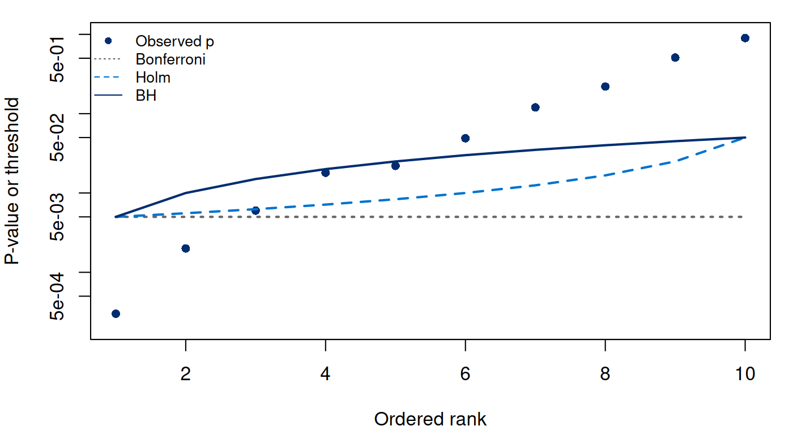
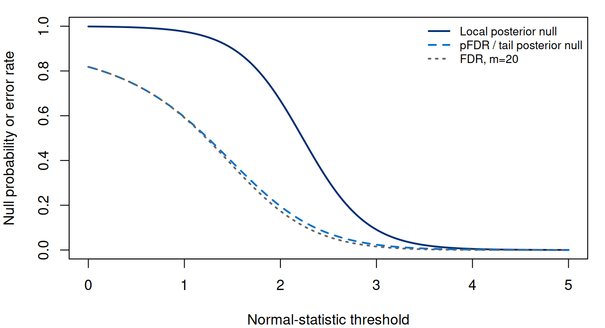

Notes on Statistical Inference
Chapter 11. Multiplicity, simultaneous claims, and false discoveries
The regression example produced an estimate, interval, and p-value for each specified coefficient, then applied Holm and BH to the full family. We now examine what those adjustments can justify. Even if every individual test is valid, inspecting many outcomes or biomarkers creates a collection of claims whose error rate is not controlled by any one test. We must specify that family and its error criterion before selecting favorable results.
Chapter 7 established the null tail property of a calibrated p-value. The debiasing argument showed why an estimated coefficient and standard error do not supply that property without suitable assumptions and a negligible remainder. We take valid elementary p-values as the starting point here and ask which collection-level error matters: any false claim in the family, or the false fraction among a set of discoveries?
We work through rank algorithms and their guarantees, drawing on the original BH development [9] and the harmonic dependence correction of [10]. We use synthetic p-values and explicit sampling models to calculate the error rates and see where the required assumptions enter.
11.1 A family and a target must precede the adjustment
Let be the prespecified hypotheses and their p-values. At a fixed parameter configuration, let be the set of true nulls, . A valid null p-value satisfies (11.1) This super-uniform condition permits discrete p-values such as the exact count tails in Chapter 7. It must hold under the relevant configuration, including any nuisance parameters. A familiar p-value formula with misspecified variance or outcome-selected analysis need not satisfy it. In the preceding regression example, a material bias remainder was another obstacle to the normal-reference p-values. Multiplicity adjustment cannot repair invalid input probabilities.
For a procedure, write for the number of rejections and for the number of true nulls rejected. Both are random across repeated complete studies; is fixed in the frequentist formulation. The analyst observes but generally cannot observe . This distinction prevents calculating an apparent false-discovery fraction by labeling inconvenient discoveries as noise after the fact.
The family is determined by the scientific claims whose simultaneous reliability is being assessed. Ten outcomes declared in advance are not the same family as the ten smallest p-values among a thousand outcomes. Restricting the latter list does not erase its selection. Prespecified independent filtering can sometimes be justified, but filtering on the same evidence that drives significance requires a separate argument. Adding subgroups, alternative outcome definitions, or directions of effect can also expand the procedure beyond the list eventually printed.
Individual effect estimates and uncertainty remain important. Rejecting several hypotheses says which null statements passed a particular rule; it does not establish equal effect sizes, causal mechanisms, or usefulness for a clinical decision. As in the earlier chapters, a statistical error target must be connected to the scientific use without silently changing its meaning.
11.2 Familywise protection without independence
The familywise error rate is . Strong control at level means that this bound holds for every configuration of true and false hypotheses, not only when every null is true. With independent exact size- individual tests under a global null, unadjusted testing has FWER . At , it is . That calculation is a warning about the combined procedure, not a claim that independence always holds.
Bonferroni rejects when . The union bound gives (11.2) No independence is used. Prespecified weights with similarly permit thresholds . The weight allocation changes which claims receive sensitivity; it should not be learned from their p-values while retaining this fixed-allocation proof.
Holm uses the ordered values . Starting at the smallest, reject as long as (11.3) and stop at the first failure. Stopping matters: passing a later, easier threshold does not resume the procedure. Every Bonferroni rejection is also a Holm rejection, but Holm can reject additional hypotheses.
To prove strong control, consider the first true null encountered in the ordered list, at position . At most false nulls precede it, so . If any true null is rejected, this first one must pass Holm’s threshold. Consequently (11.4) whose probability is at most by a union bound. When , the error is identically zero. This proof requires only valid null marginals, so dependence among outcomes does not invalidate it.
An adjusted p-value is the smallest target level at which a specified nested procedure rejects that hypothesis. Bonferroni gives . In sorted order Holm gives (11.5) The running maximum implements the requirement that every earlier test passed. These numbers describe a procedure’s rejection thresholds; they are not posterior probabilities that particular nulls are true.
The same union argument gives simultaneous uncertainty. If each interval misses its own fixed parameter with probability at most , the chance that any of intervals misses is at most . Ordinary separate 95% intervals do not automatically provide 95% joint coverage. Nor does false-discovery-rate adjustment of a selected list automatically provide a guarantee for the usual intervals subsequently reported for that list.
11.3 A false fraction requires a different expectation
Define the false discovery proportion and rate by (11.6) where . Thus FDP is zero when no discoveries are made. Since , FDR never exceeds FWER for the same procedure. Under the global null , so FDR equals FWER. With some false nulls, the two error targets can differ substantially.
FDR control bounds an expected fraction across repeated studies. It does not guarantee that the realized fraction is below the target in every study, or that each selected hypothesis has that target as its posterior null probability. A study may make no discoveries, many correct discoveries, or a highly contaminated list. The expectation averages those outcomes according to the specified experiment. Whether that target is appropriate depends on the cost of false claims and on the role of later verification.
For target , the Benjamini–Hochberg rule defines (11.7) with if the set is empty, and rejects the first hypotheses. It is a step-up rule: find the largest qualifying rank, then reject all earlier ranks. An earlier rank need not satisfy its own smaller BH threshold. This is a different logic from Holm’s first-failure stopping rule.
The corresponding BH-adjusted values are (11.8) The reverse running minimum makes the values nondecreasing with rank and implements the largest qualifying rank. Merely multiplying each p-value by without this monotonicity step is not the complete adjusted-value algorithm.
11.4 The BH bound under independence
Assume each true-null p-value is independent of the vector of all other p-values and satisfies (11.1). Mutual independence of all p-values is a simple sufficient condition. Alternatives need not have uniform distributions. Under these assumptions, (11.9) The following argument shows exactly where independence enters.
For a true null , replace by zero and let be the resulting number of BH rejections. It is at least one and depends only on the other p-values. The deterministic step-up property gives (11.10) If was rejected, lowering its p-value only rearranges already rejected ranks; it cannot create a new qualifying rank beyond the original rejection count. Conversely, if the restored value is at most , those observations still qualify, and increasing one value cannot increase the rejection count. Hence the count is unchanged on that event.
Conditional on the other p-values, independence and super-uniformity bound the expectation of the right side by . Sum over all true nulls to obtain (11.9). If true-null values are exactly uniform, equality gives FDR . Independence of null values from each other alone should not silently replace the stronger condition used in this conditional proof.
This also establishes Simes’ global-null bound: the event that any rank satisfies has probability at most for independent valid null p-values. Hochberg uses that fact for FWER control. It finds the largest with and rejects all earlier ranks. If true nulls are among those rejections, their th ordered value is at most . A false rejection therefore implies a Simes rejection among the true nulls. Under independence, that event has probability at most . Hochberg is thus distinct from BH, despite their shared step-up language; Holm’s proof remains valid under arbitrary dependence.
11.5 Holm and BH calculations for one test family
For ten prespecified tests, Table 11.1 retains their input identifiers and original order; ranks refer to the p-values after sorting. At target , Bonferroni rejects two hypotheses, Holm three, BH five, and the harmonic-adjusted BH rule introduced below two. The larger BH list is assessed under a different error criterion, not described as uniformly better scientific evidence.
| Input ID | Raw | Holm | BH | Holm reject | BH reject |
|---|---|---|---|---|---|
| H4 | 0.0180 | 0.1260 | 0.0440 | No | Yes |
| H1 | 0.0003 | 0.0030 | 0.0030 | Yes | Yes |
| H7 | 0.1200 | 0.4800 | 0.1714 | No | No |
| H3 | 0.0060 | 0.0480 | 0.0200 | Yes | Yes |
| H10 | 0.9000 | 1.0000 | 0.9000 | No | No |
| H2 | 0.0020 | 0.0180 | 0.0100 | Yes | Yes |
| H5 | 0.0220 | 0.1320 | 0.0440 | No | Yes |
| H8 | 0.2200 | 0.6600 | 0.2750 | No | No |
| H6 | 0.0490 | 0.2450 | 0.0817 | No | No |
| H9 | 0.5100 | 1.0000 | 0.5667 | No | No |
The distinction between step-down and step-up rules is clearest when an earlier rank fails its own threshold. At , rank four has , while rank five has . No later rank qualifies, so BH rejects the first five hypotheses, including rank four. It does not stop at rank four’s failure. Its adjusted value for that hypothesis is , inherited from the fifth rank through the reverse running minimum.
Run the complete R example
Dependencies: base R. This complete block includes the data, setup and calculations. Run it in a fresh R session. Short code excerpts above explain individual steps; this block supplies their shared setup. Figures and tables are written to a temporary directory.
Complete R example
# Complete R example. Synthetic data; no external files are required.
local({
previous.directory <- getwd()
example.directory <- tempfile("biomedical-example-")
dir.create(example.directory)
setwd(example.directory)
on.exit(setwd(previous.directory))
dir.create("generated",showWarnings=FALSE)
# multiple testing, dependence, and two-group interpretations.
out <- "generated"; out.dir <- out
dir.create(out,recursive=TRUE,showWarnings=FALSE)
q <- .05
# Rank algorithms derived from ordered p-values.
adjust <- function(p, method) {
stopifnot(length(p)>0,all(is.finite(p)),all(p>=0),all(p<=1))
m <- length(p);o <- order(p);s <- p[o];r <- seq_len(m)
a <- switch(method,
none = s,
bonferroni = m*s,
holm = cummax((m-r+1)*s),
hochberg = rev(cummin(rev((m-r+1)*s))),
BH = rev(cummin(rev(m*s/r))),
BY = sum(1/r)*rev(cummin(rev(m*s/r))),
stop("unknown method"))
ans <- numeric(m);ans[o] <- pmin(a,1);ans
}
bh.rule <- function(p,q) {
m <- length(p);o <- order(p);r <- which(p[o] <= q*seq_len(m)/m)
reject <- rep(FALSE,m)
if(length(r)) reject[o[seq_len(max(r))]] <- TRUE
reject
}
holm.rule <- function(p,alpha) {
m <- length(p);o <- order(p);reject <- rep(FALSE,m)
for(j in seq_len(m)) {
if(p[o[j]] > alpha/(m-j+1)) break
reject[o[j]] <- TRUE
}
reject
}
methods <- c("none","bonferroni","holm","hochberg","BH","BY")
p <- c(.0003,.002,.006,.018,.022,.049,.12,.22,.51,.90)
m <- length(p);r <- seq_len(m)
adjusted <- sapply(methods,function(method)adjust(p,method))
example <- data.frame(rank=r,raw.p=p,adjusted)
write.csv(example,file.path(out,"ch14-example.csv"),row.names=FALSE)
stopifnot(sum(adjusted[,"bonferroni"]<=q)==2,
sum(adjusted[,"holm"]<=q)==3,
sum(adjusted[,"BH"]<=q)==5,
sum(adjusted[,"BY"]<=q)==2)
# Check independent implementation, including ties and endpoint p-values.
set.seed(8021410)
for(b in seq_len(200L)) {
pp <- if(b %% 2) runif(25) else sample(c(0,.001,.01,.05,.2,1),25,TRUE)
for(method in methods)
stopifnot(max(abs(adjust(pp,method)-p.adjust(pp,method)))<1e-12)
stopifnot(identical(bh.rule(pp,q),adjust(pp,"BH")<=q),
identical(holm.rule(pp,q),adjust(pp,"holm")<=q))
}
# Reader values: thresholds change for one fixed family, with full decisions.
threshold.grid <- do.call(rbind,lapply(seq(.01,.10,by=.005),function(qq) {
data.frame(q=qq,rank=r,raw.p=p,bonferroni=q*0+qq/m,
holm=qq/(m-r+1),BH=qq*r/m,BY=qq*r/(m*sum(1/r)),
bonferroni.reject=adjust(p,"bonferroni")<=qq,
holm.reject=holm.rule(p,qq),BH.reject=bh.rule(p,qq),
BY.reject=adjust(p,"BY")<=qq)
}))
write.csv(threshold.grid,file.path(out,"ch14-threshold-grid.csv"),row.names=FALSE)
# Exact dependence counterexample: both null marginals are super-uniform.
dependence <- data.frame(state=c("A","B","C","D"),
probability=c(q/2,q/2,q/2,1-3*q/2),p1=c(q/2,1,q,1),p2=c(1,q/2,q,1))
for(method in c("bonferroni","holm","BH","BY"))
dependence[[paste0(method,"rejections")]] <- apply(dependence[,c("p1","p2")],1,
function(x)sum(adjust(x,method)<=q))
for(j in 1:2) for(u in sort(unique(c(0,dependence[[paste0("p",j)]],1))))
stopifnot(sum(dependence$probability[dependence[[paste0("p",j)]]<=u])<=u+1e-12)
stopifnot(abs(sum(dependence$probability[dependence$BHrejections>0])-1.5*q)<1e-12,
abs(sum(dependence$probability[dependence$holmrejections>0])-q)<1e-12)
write.csv(dependence,file.path(out,"ch14-dependence.csv"),row.names=FALSE)
# Simulate complete experiments with fixed true-null sets, not random labels.
B <- 10000L;M <- 100L;delta <- 3
experiment <- function(m0) {
z <- matrix(rnorm(B*M),nrow=B,ncol=M)
if(m0<M) z[,(m0+1):M] <- z[,(m0+1):M]+delta
pp <- pnorm(z,lower.tail=FALSE)
do.call(rbind,lapply(methods,function(method) {
metrics <- t(apply(pp,1,function(x) {
reject <- adjust(x,method)<=q
R <- sum(reject);V <- sum(reject[seq_len(m0)])
true <- if(m0<M) sum(reject[(m0+1):M]) else 0
c(FWER=as.numeric(V>0),FDP=V/max(1,R),R=R,true=true)
}))
data.frame(m=M,m0=m0,alternative.shift=delta,replications=B,method=method,
FWER=mean(metrics[,"FWER"]),FWER.MCSE=sd(metrics[,"FWER"])/sqrt(B),
FDR=mean(metrics[,"FDP"]),FDR.MCSE=sd(metrics[,"FDP"])/sqrt(B),
mean.rejections=mean(metrics[,"R"]),mean.true.discoveries=mean(metrics[,"true"]),
true.discovery.fraction=if(m0<M)mean(metrics[,"true"])/(M-m0) else NA_real_)
}))
}
set.seed(8021414)
operating <- rbind(experiment(M),experiment(80L))
write.csv(operating,file.path(out,"ch14-operating.csv"),row.names=FALSE)
# Exact global-null calibrations and the exact BH mixed-null expectation.
null.bonf <- 1-(1-q/M)^M
null.unadjusted <- 1-(1-q)^M
mixed <- operating[operating$m0==80 & operating$method=="BH",]
stopifnot(abs(mixed$FDR-q*.8) <= 6*mixed$FDR.MCSE)
for(method in c("bonferroni","holm","hochberg")) {
d <- operating[operating$method==method,]
stopifnot(all(d$FWER<=q+6*d$FWER.MCSE))
}
# A known iid two-group mixture uses a different averaging model.
pi0 <- .9;shift <- 3;MM <- 20L
c.grid <- seq(0,5,by=.025)
a <- pi0*pnorm(c.grid,lower.tail=FALSE)
b <- (1-pi0)*pnorm(c.grid-shift,lower.tail=FALSE)
s <- a+b
local <- pi0*dnorm(c.grid)/(pi0*dnorm(c.grid)+(1-pi0)*dnorm(c.grid-shift))
tail <- a/s
mixture <- data.frame(threshold=c.grid,pi0=pi0,shift=shift,m=MM,
local.null.probability=local,tail.null.probability=tail,
selection.probability=s,positive.selection.probability=1-(1-s)^MM,
frequentist.FDR=tail*(1-(1-s)^MM),p.value=pnorm(c.grid,lower.tail=FALSE))
stopifnot(all(is.finite(as.matrix(mixture))),all(diff(local)<=1e-12),
all(diff(tail)<=1e-12),all(tail<=local+1e-12))
# Conditional Binomial(V | R) gives the fixed-m identity by enumeration.
c0 <- 3;a0 <- pi0*pnorm(c0,lower.tail=FALSE)
b0 <- (1-pi0)*pnorm(c0-shift,lower.tail=FALSE);s0 <- a0+b0;tau <- a0/s0
exact.fdr <- sum(dbinom(1:MM,MM,s0)*tau)
stopifnot(abs(exact.fdr-tau*(1-(1-s0)^MM))<1e-12)
set.seed(8021424)
counts <- rmultinom(50000L,MM,c(a0,b0,1-s0))
RR <- counts[1,]+counts[2,];FDP <- counts[1,]/pmax(1,RR)
mixture.mc <- data.frame(m=MM,threshold=c0,pi0=pi0,shift=shift,
local.null.probability=pi0*dnorm(c0)/(pi0*dnorm(c0)+(1-pi0)*dnorm(c0-shift)),
positive.FDR=tau,FDR=exact.fdr,simulated.FDR=mean(FDP),
MCSE=sd(FDP)/sqrt(length(FDP)),replications=length(FDP))
stopifnot(abs(mean(FDP)-exact.fdr)<=6*mixture.mc$MCSE)
write.csv(mixture,file.path(out,"ch14-mixture.csv"),row.names=FALSE)
write.csv(mixture.mc,file.path(out,"ch14-mixture-check.csv"),row.names=FALSE)
# Tables record realized calculations without pretending unknown truth is observable.
con <- file(file.path(out,"ch14-example.tex"),"w")
writeLines(c("\\begin{tabular}{rrrrrr}\\toprule",
"Rank & Raw & Bonferroni & Holm & BH & BY \\\\","\\midrule"),con)
for(i in seq_len(m))writeLines(sprintf("%d & %.4f & %.4f & %.4f & %.4f & %.4f \\\\",
r[i],p[i],adjusted[i,"bonferroni"],adjusted[i,"holm"],adjusted[i,"BH"],adjusted[i,"BY"]),con)
writeLines(c("\\bottomrule","\\end{tabular}"),con);close(con)
con <- file(file.path(out,"ch14-operating.tex"),"w")
writeLines(c("\\begin{tabular}{lrrrr}\\toprule",
"Procedure & FWER & FDR & FDR MCSE & True discoveries \\\\","\\midrule"),con)
for(i in which(operating$m0==80)) writeLines(sprintf("%s & %.4f & %.4f & %.4f & %.2f \\\\",
operating$method[i],operating$FWER[i],operating$FDR[i],operating$FDR.MCSE[i],operating$mean.true.discoveries[i]),con)
writeLines(c("\\bottomrule","\\end{tabular}"),con);close(con)
figure <- function(name,ext) {
path <- file.path(out,paste0(name,".",ext))
if(ext=="pdf")cairo_pdf(path,width=7,height=3.8) else png(path,width=1400,height=760,res=200)
if(name=="ch14-thresholds") {
par(mar=c(4,4,1,1))
plot(r,p,log="y",pch=16,col="#002D72",xlab="Ordered rank",ylab="P-value or threshold",ylim=c(.0002,1))
lines(r,rep(q/m,m),col="gray40",lty=3,lwd=2)
lines(r,q/(m-r+1),col="#0072CE",lty=2,lwd=2)
lines(r,q*r/m,col="#002D72",lwd=2)
legend("topleft",c("Observed p","Bonferroni","Holm","BH"),pch=c(16,NA,NA,NA),
lty=c(NA,3,2,1),col=c("#002D72","gray40","#0072CE","#002D72"),bty="n",cex=.8)
} else {
par(mar=c(4,4,1,1))
plot(mixture$threshold,mixture$local.null.probability,type="l",col="#002D72",lwd=2,
ylim=c(0,1),xlab="Normal-statistic threshold",ylab="Null probability or error rate")
lines(mixture$threshold,mixture$tail.null.probability,col="#0072CE",lwd=2,lty=2)
lines(mixture$threshold,mixture$frequentist.FDR,col="gray40",lwd=2,lty=3)
legend("topright",c("Local posterior null","pFDR / tail posterior null","FDR, m=20"),
lty=1:3,lwd=2,col=c("#002D72","#0072CE","gray40"),bty="n",cex=.8)
}
dev.off()
}
for(ext in c("pdf","png")) {
figure("ch14-thresholds",ext);figure("ch14-mixture",ext)
}
writeLines(c("ch14-example.csv: ordered raw p-values and six adjustments; truth not assumed known.",
"ch14-threshold-grid.csv: 19 q values by10 ranks; fixed-family critical thresholds and complete rejection decisions.",
"ch14-dependence.csv: four states, exact probabilities,valid null p-values, rejection counts.",
"ch14-operating.csv: two fixed-truth independent-normal scenarios,10000 complete replications each; empirical FWER,FDR,MCSE,discoveries.",
"ch14-mixture.csv: known iid random-label normal mixture,local/tail posterior probabilities,pFDR,FDR,selection probability.",
"ch14-mixture-check.csv: exact fixed-m FDR and executed Monte Carlo check,50000 replications.",
"FDR and FWER have different meanings; BH/BY adjusted values are not individual posterior null probabilities."),file.path(out,"ch14-schema.txt"))
writeLines(capture.output(sessionInfo()),file.path(out,"ch14-sessionInfo.txt"))
# One family in its original input order, not an implicitly sorted output list.
# From first principles: reuse the running-maximum/minimum rank algorithms.
p.input <- c(H4=.018,H1=.0003,H7=.12,H3=.006,H10=.90,
H2=.002,H5=.022,H8=.22,H6=.049,H9=.51)
rank.pair <- function(p) {
stopifnot(length(p)>0,all(is.finite(p)),all(p>=0 & p<=1))
m <- length(p); o <- order(p); r <- seq_len(m)
s <- p[o]
sorted <- cbind(Holm=pmin(1,cummax((m-r+1)*s)),
BH=pmin(1,rev(cummin(rev(m*s/r)))))
result <- sorted[order(o),,drop=FALSE]
rownames(result) <- names(p)
result
}
manual <- rank.pair(p.input)
# Standard R workflow: keep the family size, methods and input labels explicit.
family.size <- length(p.input)
standard <- cbind(Holm=stats::p.adjust(p.input,method="holm",n=family.size),
BH=stats::p.adjust(p.input,method="BH",n=family.size))
stopifnot(max(abs(manual-standard))<1e-12,
identical(rownames(standard),names(p.input)))
workflow.table <- data.frame(hypothesis=names(p.input),
raw.p=as.numeric(p.input),Holm=standard[,"Holm"],BH=standard[,"BH"],
Holm.reject=standard[,"Holm"]<=q,BH.reject=standard[,"BH"]<=q,
row.names=NULL)
print(workflow.table,digits=6,row.names=FALSE)
# Missing output does not itself define a smaller scientific family.
p.missing <- c(H1=.01,H2=NA_real_,H3=.04)
missing.example <- data.frame(hypothesis=names(p.missing),p=p.missing,
Holm.default=stats::p.adjust(p.missing,"holm"),
Holm.family3=stats::p.adjust(p.missing,"holm",n=3L),
BH.default=stats::p.adjust(p.missing,"BH"),
BH.family3=stats::p.adjust(p.missing,"BH",n=3L),row.names=NULL)
stopifnot(identical(names(stats::p.adjust(p.missing,"holm",n=3L)),names(p.missing)),
is.na(missing.example$Holm.family3[2]),is.na(missing.example$BH.family3[2]),
max(abs(missing.example$Holm.family3[c(1,3)]-c(.03,.08)))<1e-12,
max(abs(missing.example$BH.family3[c(1,3)]-c(.03,.06)))<1e-12)
# Explicit n=length(p.input) is unchanged for this fully observed ten-test family.
# Ties, zeros and ones have defined rank behavior; original ordering is restored.
tied.input <- c(Ha=.02,Hb=.02,Hc=0,Hd=1,He=.05)
for(method in c("holm","BH"))
stopifnot(max(abs(adjust(tied.input,method)-
stats::p.adjust(tied.input,method=method,n=length(tied.input))))<1e-12)
set.seed(8021466)
for(j in seq_len(100L)) {
pp <- if(j %% 2L) runif(25) else sample(c(0,.01,.02,.02,.05,1),25,TRUE)
derivation <- rank.pair(pp)
for(method in c("holm","BH"))
stopifnot(max(abs(derivation[,if(method=="holm")"Holm" else "BH"]-
stats::p.adjust(pp,method=method,n=length(pp))))<1e-12)
}
write.csv(workflow.table,file.path(out,"ch14-r-workflow.csv"),row.names=FALSE)
write.csv(missing.example,file.path(out,"ch14-missing-workflow.csv"),row.names=FALSE)
capture.output(print(workflow.table,digits=6,row.names=FALSE),
print(missing.example,digits=6,row.names=FALSE),
file=file.path(out,"ch14-r-workflow-output.txt"))
lines <- c("\\begin{tabular}{lrrrrr}\\toprule",
"Input ID & Raw & Holm & BH & Holm reject & BH reject \\\\ \\midrule")
for(j in seq_len(nrow(workflow.table))) lines <- c(lines,sprintf(
"%s & %.4f & %.4f & %.4f & %s & %s \\\\",
workflow.table$hypothesis[j],workflow.table$raw.p[j],workflow.table$Holm[j],
workflow.table$BH[j],if(workflow.table$Holm.reject[j])"Yes" else "No",
if(workflow.table$BH.reject[j])"Yes" else "No"))
writeLines(c(lines,"\\bottomrule\\end{tabular}"),
file.path(out,"ch14-r-workflow.tex"))
writeLines(capture.output(sessionInfo()),file.path(out,"ch14-session-info.txt"))
cat("\nSelected numerical results\n")
for (candidate in c("reader", "summary", "summary.mc", "perf", "comparison", "route.comparison", "test", "tab", "exact", "workflow.ci", "coef.tab", "evaluation.table")) {
if (exists(candidate, inherits=FALSE)) {
value <- get(candidate, inherits=FALSE)
if (is.data.frame(value) || is.matrix(value)) { cat(candidate, "\n"); print(utils::head(value,8)) }
}
}
cat("R", as.character(getRversion()), "\n")
})
This excerpt shows a step inside the preceding complete R example; it uses that block’s data and setup.
p <- c(.0003,.002,.006,.018,.022,.049,.12,.22,.51,.90)
q <- .044; rank <- seq_along(p)
passing <- which(p <= q*rank/length(p))
r.star <- if(length(passing)) max(passing) else 0L
rank <= r.star # TRUE for the first five ranksFrom first principles
The direct rank implementation sorts the family, takes Holm’s running maximum or BH’s reverse running minimum, caps at one, and restores input order. These steps are the computational counterparts of equations (11.5) and (11.8):
This excerpt shows a step inside the preceding complete R example; it uses that block’s data and setup.
H2=.002,H5=.022,H8=.22,H6=.049,H9=.51)
rank.pair <- function(p) {
stopifnot(length(p)>0,all(is.finite(p)),all(p>=0 & p<=1))
m <- length(p); o <- order(p); r <- seq_len(m)
s <- p[o]
sorted <- cbind(Holm=pmin(1,cummax((m-r+1)*s)),
BH=pmin(1,rev(cummin(rev(m*s/r)))))
result <- sorted[order(o),,drop=FALSE]
rownames(result) <- names(p)
result
}
manual <- rank.pair(p.input)A separate implementation of the largest-qualifying-rank rule checks the BH decisions:
This excerpt shows a step inside the preceding complete R example; it uses that block’s data and setup.
bh.rule <- function(p,q) {
m <- length(p);o <- order(p);r <- which(p[o] <= q*seq_len(m)/m)
reject <- rep(FALSE,m)
if(length(r)) reject[o[seq_len(max(r))]] <- TRUE
reject
}For the table, the complete R example puts the same ten values into a deliberately unsorted named vector. H4 has raw value and H5 has ; their common BH value follows from the fifth sorted rank, irrespective of where those hypotheses appear in the input.
Standard R workflow
Apply stats::p.adjust() to that same named vector,
explicitly selecting the procedure and family size [11]:
This excerpt shows a step inside the preceding complete R example; it uses that block’s data and setup.
standard <- cbind(Holm=stats::p.adjust(p.input,method="holm",n=family.size),
BH=stats::p.adjust(p.input,method="BH",n=family.size))
stopifnot(max(abs(manual-standard))<1e-12,
identical(rownames(standard),names(p.input)))
workflow.table <- data.frame(hypothesis=names(p.input),The output remains in input order with its labels intact. At target , Holm rejects H1, H2, and H3; BH rejects H1 through H5. The package checks include tied values, zero and one. A tie can share an adjusted threshold; it does not justify discarding one hypothesis or changing the family.
Missing test output needs a separate decision about the scientific
family. With input c(H1=.01,H2=NA,H3=.04) and the
prespecified family size n=3, the tested workflow returns
Holm values
and BH values
.
In the tested R 4.3.3 implementation, leaving n at its
default instead gives
for both methods because the default is evaluated after missing entries
are removed. Explicit n avoids relying on that
implementation detail [12]. The unavailable value
remains unavailable; these computations do not establish why it is
missing or validate outcome-dependent filtering. A larger specified
n treats unobserved values as larger than observed ones for
Holm, and as one for BH. It is a way to retain a stated family
convention, not to erase an original search or manufacture a valid
elementary p-value.


We also execute 10,000 full independent-normal experiments with tests. In the mixed configuration, eighty statistics are and twenty are ; one-sided p-values are their standard-normal upper tails. True-null status is fixed and known to the simulator. The normal upper-tail transformation supplies uniform true-null p-values here because the complete null distribution is specified exactly; an approximately normal statistic would require a separate calibration assessment. Table 11.2 reports empirical error rates, Monte Carlo error, and mean true discoveries. The independent-uniform BH theorem supplies the exact FDR target for comparison. A single simulated FDP is neither that expectation nor an observable truth estimate in a real study.
| Procedure | FWER | FDR | FDR MCSE | True discoveries |
|---|---|---|---|---|
| none | 0.9831 | 0.1735 | 0.0007 | 18.25 |
| bonferroni | 0.0378 | 0.0047 | 0.0002 | 7.71 |
| holm | 0.0402 | 0.0049 | 0.0003 | 7.88 |
| hochberg | 0.0402 | 0.0049 | 0.0003 | 7.88 |
| BH | 0.4511 | 0.0392 | 0.0005 | 14.29 |
| BY | 0.0731 | 0.0074 | 0.0003 | 9.05 |
In this executed experiment, BH’s estimated FDR is , with MCSE , approximately MCSE below its exact value . Its FWER is : false discoveries occur in many studies, but usually make up a small fraction of a larger discovery list. Mean true discoveries are out of twenty. Holm’s estimated FWER is and mean true discoveries . These numbers demonstrate the effect of choosing different error targets in this particular signal configuration. They do not establish that an FDR target is preferable for every scientific use or that a selected biomarker has a posterior null probability.
Across features, dependence is a joint-distribution question. Independent study participants do not automatically make tests of several correlated measurements independent: the tests can reuse the same people and respond to the same random outcomes. On the other hand, dependence does not by itself invalidate every individual p-value. Valid marginals plus a valid family procedure, and a valid joint assumption for a procedure that requires one, are separate obligations. Their separation is why Holm can remain justified when the elementary BH independence proof does not.
11.6 Dependence can break BH, and the harmonic bound repairs it
Valid marginals alone do not prove BH control. Consider two true nulls and these dependent p-values:
| State | Probability | ||
|---|---|---|---|
| A | 1 | ||
| B | 1 | ||
| C | |||
| D | 1 | 1 |
For , each marginal is super-uniform: its CDF reaches at , at , and one at one. BH rejects in A and B at rank one and in C at rank two. Therefore its FDR equals its FWER, . At this is , an exact failure rather than a noisy simulation. Bonferroni and Holm reject only in A and B and have FWER .
The Benjamini–Yekutieli rule replaces in BH by , where . Here is a proof under arbitrary dependence. For a step-up rule with thresholds , every rejected satisfies . Validity gives for a true null. Partition its remaining possible rejected values into . Rejection in that interval requires , so for a true null with CDF , (11.11) Super-uniformity gives ; its nonnegative CDF coefficients justify the last bound. It does not bound every short interval’s probability by its length. Taking and summing over true nulls gives FDR at most , without independence. The stronger protection can reduce discoveries; exploiting a justified dependence structure can sometimes improve it, but generic correlation language is not that justification.
11.7 Posterior null probabilities use a different model
A two-group model describes the mixture of null and alternative features. Let a random feature label be null with probability , and let have density under a null and otherwise. Its mixture density is . Under this explicitly specified model, (11.12) This local posterior null probability is different from a p-value or a BH-adjusted value. For a fixed region , the posterior null fraction among selected features is (11.13) It averages local posterior probabilities across the selected region, rather than assigning the same probability to every selected observation.
If feature pairs are independent and identically distributed and , then and for . Consequently (11.14) This is a random-label averaging model. It must not silently replace the fixed-null-configuration target used in the BH theorem. The selected region is fixed here; a threshold fitted from the same observations changes the conditioning argument.
For a separate worked model, use known , , , , and . These twenty random-label features differ from both the fixed ten-test family and the fixed-null simulation above. The local posterior null probability at is , while the tail pFDR among is . The unconditional FDR is : with only twenty features, there is an appreciable chance of making no discoveries. The simulated FDR is , with MCSE , compatible with that exact value. The script checks (11.14) by exact count enumeration and 50,000 simulations. Figure 11.2 separates these quantities. Treating and the densities as known makes a transparent worked example; estimating them is additional modelling, not a free removal of multiplicity.


A model-based q-value minimizes tail pFDR over nested rejection regions containing an observed statistic. It concerns a selected region, not generally the pointwise local posterior probability. BH-adjusted p-values are sometimes also informally called q-values; here we keep their names distinct. Neither quantity creates a per-discovery posterior interpretation without the associated model and assumptions.
11.8 Interpret a discovery list
The simulation targets a whole discovery procedure. For replication FDP values , estimated FDR is with MCSE . A small estimated FDR therefore describes repeated lists under the specified experiment; it is not a count of verified truths in the observed list. Likewise, the two-group model assigns posterior probabilities only through its specified null and alternative distributions. These interpretations should accompany the adjustment name when discoveries are reported.
For a regression discovery list, we return to the conditional coefficient as the effect target. Its estimate describes magnitude, its interval describes uncertainty under a stated procedure, and its p-value tests a particular null. Holm and BH add different protections for a specified family; they do not alter the coefficient target or supply an individual posterior probability. Correlated features require an appropriate dependence argument, and ordinary marginal intervals reported only for selected discoveries do not become simultaneous intervals. We report the family, input tests, error criterion, dependence assumption, and interval procedure alongside the effects.
11.9 Exercises
Allocate the error budget before observing the data. Fix a family before observing the data. For every true null , assume its p-value is super-uniform: for . Let fixed nonnegative weights satisfy , and reject if , with .
Prove strong FWER control at level without an independence assumption. Derive the analogous simultaneous-coverage bound for intervals whose marginal noncoverage probabilities are at most .
Under the global null, suppose instead that independent individual tests each have exact size and no adjustment. Derive their FWER and distinguish the equality from the case of tests with size merely at most .
Show why data-selected weights can invalidate the first part: take two independent uniform null p-values and allocate all weight to their minimum, breaking a tie by the smaller index. Calculate the FWER. Explain why selecting the smallest p-values and then declaring only that list to be the original family requires a separate selection argument.
Holm and Hochberg use different stopping rules. For a fixed family of hypotheses, assume valid super-uniform true-null p-values. Order all values as , breaking ties by a fixed index order. Holm rejects consecutive ranks while , stopping at the first failure.
Prove strong FWER control under arbitrary dependence by considering the first true null in the ordered list. Include the case with no true nulls.
Derive Holm’s adjusted p-values using a running maximum, then calculate them and the rejection set at for the ordered values .
Hochberg rejects through the largest rank with , or makes no rejections if no rank passes. Calculate its rejection set for the same values. Under mutual independence of valid p-values, explain how a false rejection implies a Simes rejection within the true-null family. State why the arbitrary-dependence Holm proof does not establish the same guarantee for Hochberg.
Where independence enters the BH proof. Apply BH to a fixed family of p-values at : let , with if the set is empty, and reject all ranks at most . For each true null , assume is super-uniform and independent of the vector of all other p-values. Let be the number of true nulls and the number rejected. Ties are ordered by a fixed index rule and equality passes a threshold.
Replace by zero and let be the resulting BH rejection count. Prove the deterministic identity
Condition on the other p-values to prove . Identify the exact step requiring independence.
State the additional condition under which the displayed bound is equality. Under a global null with independent uniform p-values, describe the possible realized FDP values and explain why an FDR equal to does not mean that each realized list has false fraction .
Valid marginals do not determine a joint guarantee. There are two true nulls. Fix and generate from four states:
Derive each marginal CDF and verify super-uniformity on the entire interval .
Using equality as passing a threshold, calculate the FDR for Bonferroni, Holm, BH and BY at level . BY is BH with target , where . Explain why FDR equals FWER in this model.
More generally, for valid null marginals with arbitrary dependence, suppose a step-up rule satisfies for every rejected hypothesis. Let be a true-null CDF, and assume . Prove Use to obtain the BY FDR bound. Explain why super-uniformity alone does not justify bounding each CDF increment by the interval length.